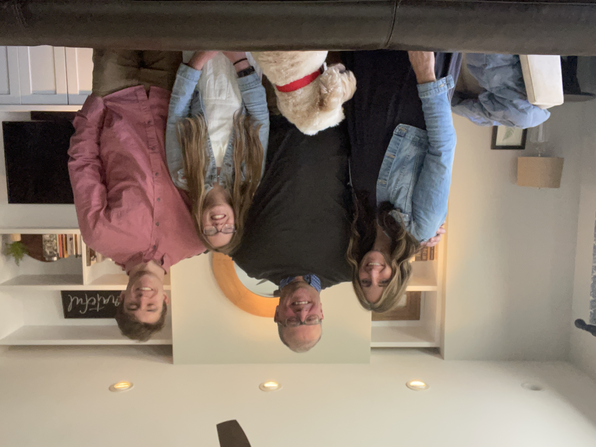
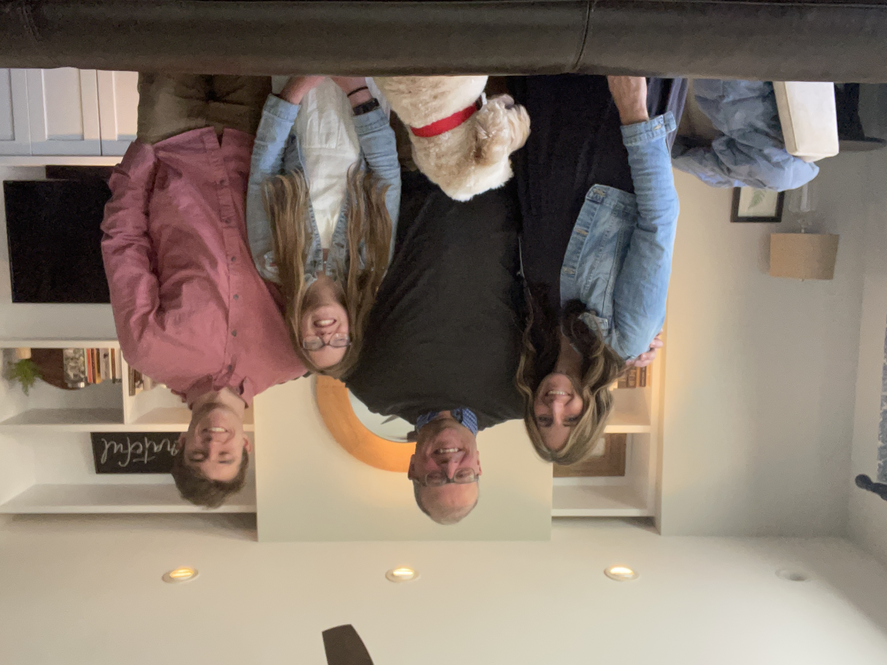
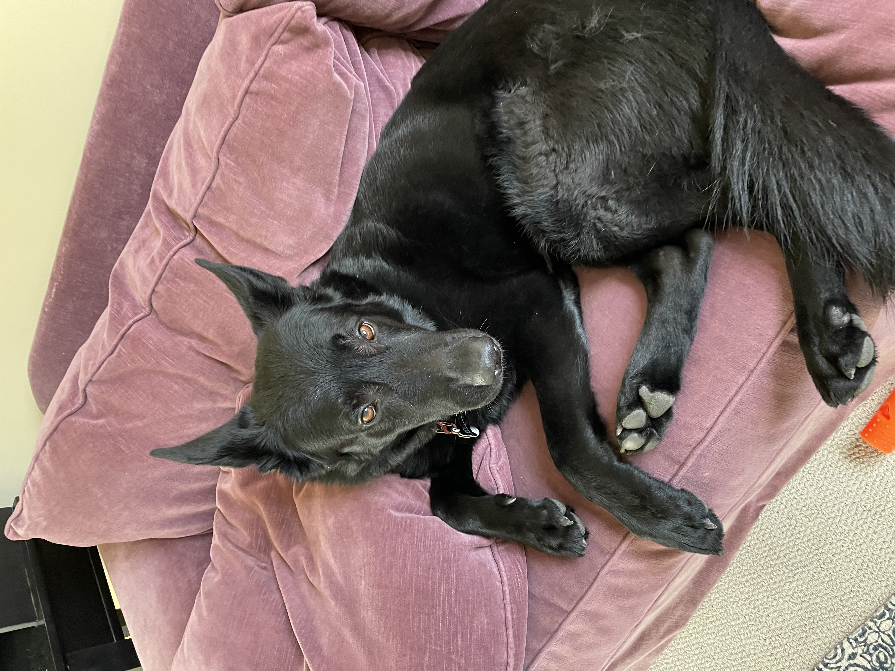
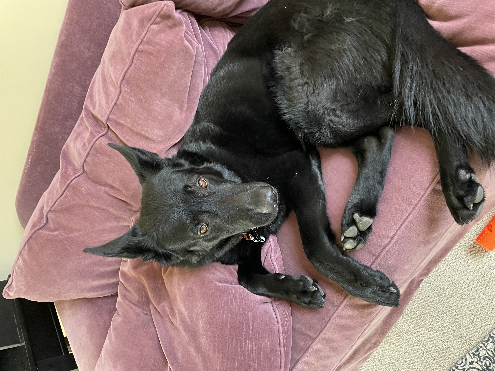
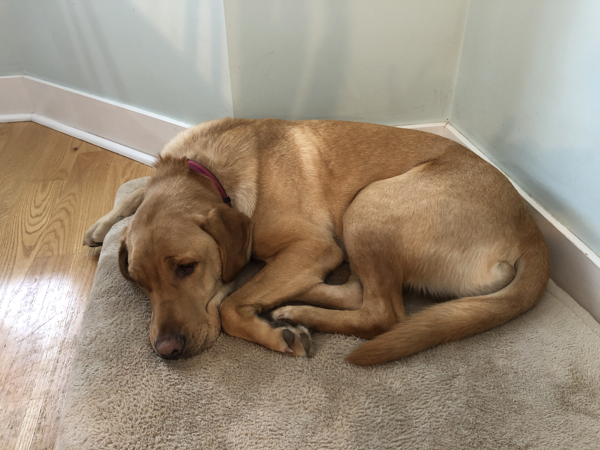
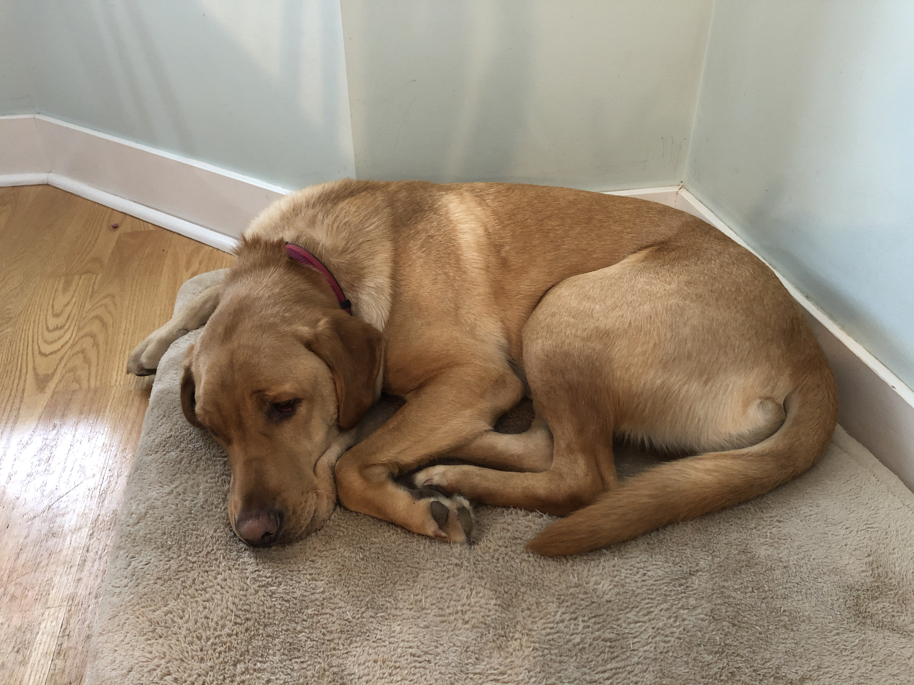
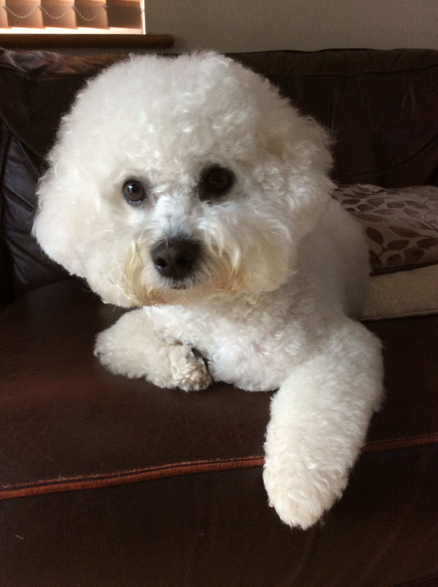
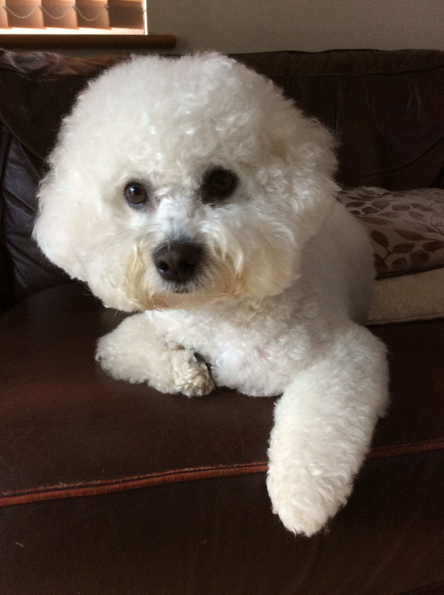
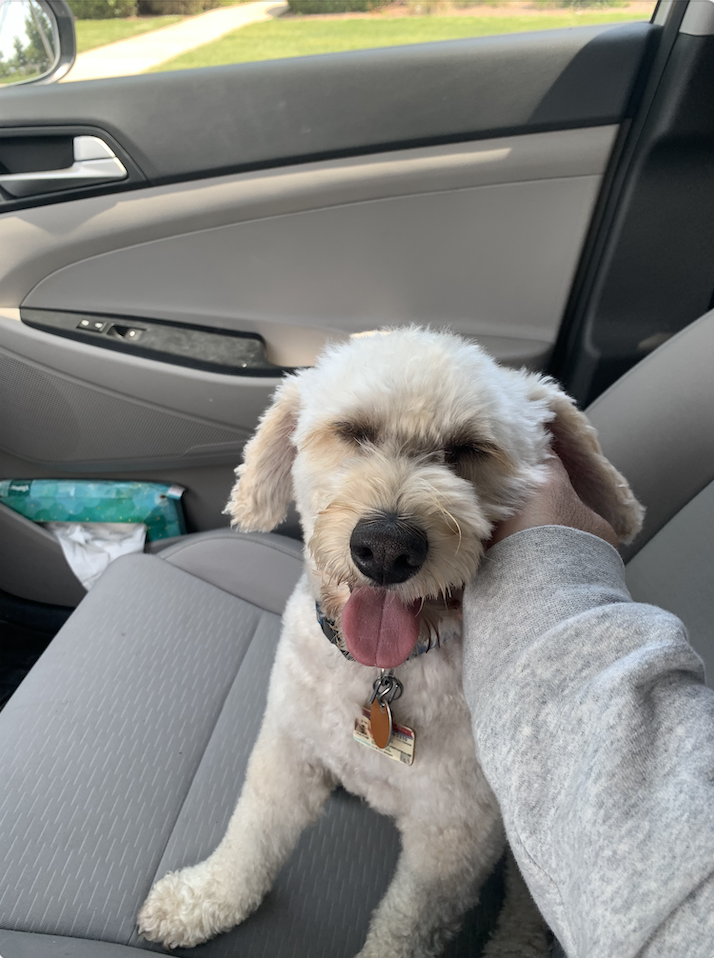
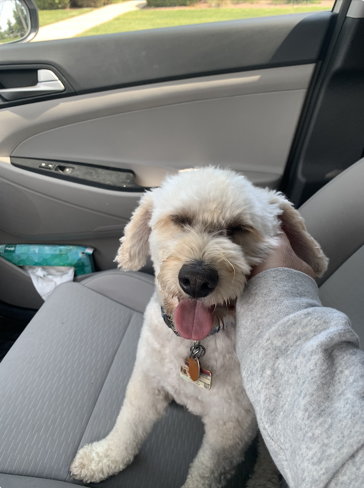

Leo

Leo is a very hyper labradoodle who enjoys running around and meeting new people. Leo recently turned six back in July, and received two toys for his birthday which he has already destroyed. Leo also enjoys laying around the house, his favorite spots being my parents bedroom and the living room couch.
Leo is a big fan of when the mailman comes because that means he will get a treat. At bedtime, Leo waits for both of my parents to get into bed before he goes to bed. He thinks he needs to guard them while they are both still awake.
Photo Gallery


 

Likes
- Naps
- Food
- Going on walks
Bacon Q Dog

Bacon Q. Dog is a 9yr old labradoodle. He prefers to spend his days lounging among the three different beds/couches that his family has gifted him. He enjoys a walk or two around the neighborhood, as long as he can pretend that he doesn't see any of the other animals to avoid the embarrassment of not wanting to admit he has no wolf-like skills in chasing them.
At night just as the rest of the family is ready to relax, Bacon suddenly wants to release all of his energy. He will place his toys on a mini couch and frantically drag the couch around, giving his toys "a ride." There is also a lot of rolling. Lots and lots of rolling.
Photo Gallery


Likes
- Belly rubs
- Playing tug-of-war
- Sneaking onto the couch
York

York loves to stay active and go on long walks by his house. He also enjoys chewing on his large assortment of toys. His favorite toy is his squeaky pig. York’s favorite food is sausage, but cheese is another favorite.
York is a very sociable dog and is a licensed therapy dog. He frequently visits nursing homes and other places in an attempt to raise peoples’ spirits. When it comes to bedtime, York prefers to sleep alone in his favorite blue dog bed. He will always be the first to get up in the morning.
Photo gallery
 



Likes
- Food
- Playing
- Toys
Lincoln

Lincoln is a very intelligent dog. There are times when I don't go pet him and you can see it in his eyes, he is holding a grudge. For the next hour or so he won't come when I call him but will look at me with eyes that say, You did this. Another example of his intelligence is he is an ace at hide and seek, as well as other games a dog should not be able to play.
Lincoln is not a huge fan of his brother (my other dog), Rainier. When Rainier gets any form of attention, Lincoln will put himself into the scene and bark as if he is being mistreated. He is not being mistreated, Lincoln is just a wimp.
Photo Gallery


 

Likes
- Walks
- Swimming
- Rides
River

River is a 7 year old bichon frise. Though he is aging, he is extremely active and loves to play. He likes to throw things. He will throw his ball down the stairs and play fetch with himself if you don’t give him attention. He will also throw his food and water bowl to let us know he wants more.
River is obsessed with my mom. My mom is the one who mostly walks him and gives him treats. Anywhere my mom goes, River follows. If she's gone for 2 minutes, he will frantically search the house for her. Although he likes being with people, he hates being cuddled or held.
Photo Gallery
 



Likes
- Attention
- Treats
- Rolling ball down the stairs
Milo

Milo is a 6 year old schnoodle. He is super energetic and his favorite game is fetch, which he wants to play all the time — yes, even when it’s pitch black outside or the weather is unideal. Milo is also loving and kind, at least to humans. When he’s around other dogs, he is either jealous of the attention they’re receiving, or ignores them because he has other priorities (chasing a ball).
Milo is also a pretty smart dog, although he doesn't always use it for good. He can roll over on command, and use his sense of scent to find a hidden treat. But he’s also figured out some loopholes to get what he wants. For example, he has been trained to nudge the bell near the front door to indicate that he needs to be walked. Recently, though, he’s learned that he can just pretend like he wants to go on a walk, but instead lead us around the house to the backyard so he can play. In case it wasn’t clear: Milo loves to play. Although he can be sneaky, my family loves him more than anything.
Photo Gallery

 


Likes
- Playing fetch
- Table Scraps
- Belly rubs
Daisy

When Daisy isn’t busy slaying all of the evil snakes trying to attack us (Pictured Above), you can usually find her annoying her older sister Marina, getting super hyper at completely random times, or relaxing in our backyard making sure she keeps out all of the intruders (squirrels)
One of Daisy’s favorite things to do is beg to go on a walk, and then once we’re about half way done with the walk she likes to lay down and refuse to keep going. She then loves being carried all the way back from said walk, and the process will repeat again later in the day.
Photo Gallery


Likes
- Shredded Cheese
- Walks around the neighborhood
- Peanut Butter Chex Cereal (specifically peanut butter kind)